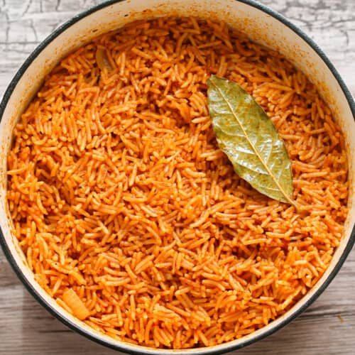
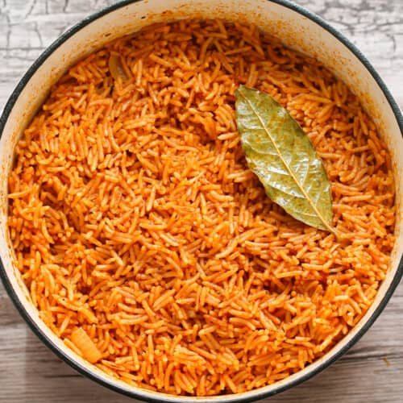

Jollof rice is a popular West African one-pot rice dish made from long-grain rice simmered in a flavorful, spiced tomato and pepper stew. It is known for its rich, savory, and often spicy taste, with a vibrant red color derived from tomatoes and red bell peppers.
Blend tomatoes, red bell pepper, scotch bonnet and half onion
Wash rice thoroughly until water runs clear.Parboil in hot water for 5–7 minutes, then drain and set aside.
Heat oil in pot, add sliced onion and fry till fragrant. Stir in tomato paste and fry for 3-5 mins. Add blended pepper mix and cook for about 15 mins.
Add curry powder, Thyme, Salt, Seasnings cube, Bay leaves and stir well
Pour in chicken/beef stock and stir. Add parboiled rice and mix thoroughly.
Cover with foil and lid. Allow to cook on low-medium heat for 20–25 minutes until rice is soft and fully cooked.
Serve with fried chicken and vegetables if you want
Please click here to read about the nutrition facts of this recipe.